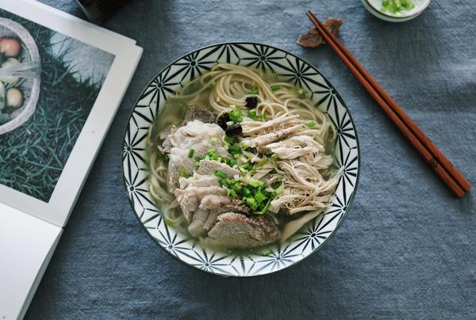

大连面 (Dalian Noodles) from Jingzhou
My hometown Jingzhou is not only famous of its historical importance in the Three Kingdom Era, but also famous of its breakfasts. This is a recipe for one of the most famous breakfast noodle options you would find in almost every noodle shop in Jingzhou (and it is my personal favourite) - Da Lian Noodle.

Ingredients:
Instructions:
- Blanch the chicken, eel bone, pork femur bone and ham to remove the blood.
- Stew the femur bone and chicken (around 2 hours)
- Add the ham, salt, and a little bit of ginger slices to the soup to remove the fishy and bloody smell. Simmer for 1 hour. (Leave the soup base for later use)
- Deep fry the eel bone until gold and crispy.
- Slice the ham.
- Shred the chicken.
- Prepare boiling water and cook the noodle.
- Prepare a bowl of cold water.
- Take out the noodle and put them in a colander.
- Sink colander into cold water for 3 seconds and take out. Repeat 2-3 times.
- Shake the colander to remove the remaining cold water.
- Put the noodles in a bowl.
- Layer the sliced meats and fried eel bones on the noodle.
- Pour in the soup base.
- Add some chopped scallion or coriander as you wish.
